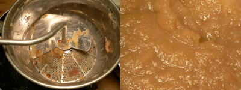

Leland makes applesauce, becomes a man

After several days of uncertainty over whether I had been scammed for a food mill on eBay, I finally received my vintage Foley beauty yesterday morning. I then thought about making applesauce all day.
I bought a mix of apples on my way home from work: two Galas, a Honeycrisp, and two Granny Smiths. Just as Mom instructed last week, I quartered the apples and simmered them in just a bit of liquid for about an hour, until they turned to mush. I even forgot about them for a while, but this only made it easier. Passing them through the food mill was a breeze (with Nathan’s help). I didn’t add any sugar—just a bit of cinnamon.
Last night was the first time I’ve made something that looked, tasted, and smelled just like Mom’s. This gave me the deepest kind of satisfaction, and it made me think how fulfilling it will be to someday teach my own children to make this perfectly simple, versatile, necessary side dish. More than any other food, applesauce is at the heart of my childhood eating memories, as it was on the table more often than not. I remember insisting on having a separate bowl and spoon for my sauce, although now I prefer it to mix a bit with whatever savory item is on the plate (last night it was cheesy, oniony risotto).
This all makes me feel very emotional, and it makes me miss home, so I’ll stop right here.
Comments
We were both cranking our food mills last night; I was making applesauce, too!
I like to serve applesauce on the plate with quiche, maybe because at the Watergate we always served a big canned peach half with the quiche and I used to think that was kind of tacky. But I do think something tart and fruity goes well with quiche, although of course green salad does, too.
This was a very touching post. Food really does have a way of connecting us with our past.
BTW, the cheesy-oniony risotto sounds pretty good too.
Thanks, Julie! That’s really the whole point of this blog.
The cheesy-oniony risotto is so good, and I may post on it one of these days. A diced red onion in lots of hazelnut butter is the key!
Add a comment